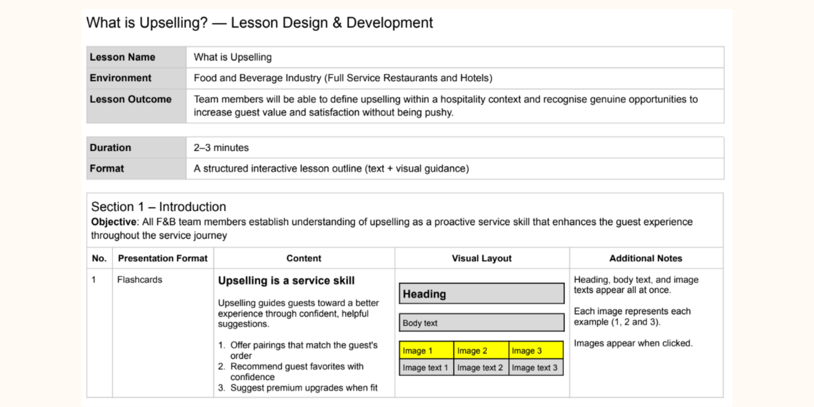
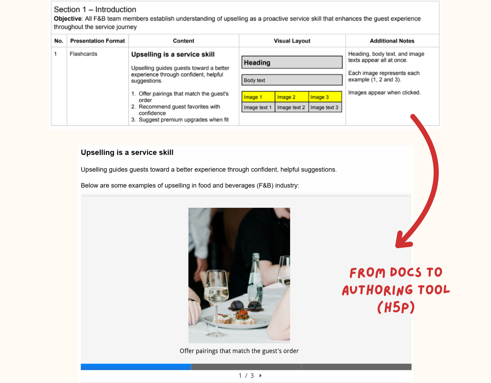
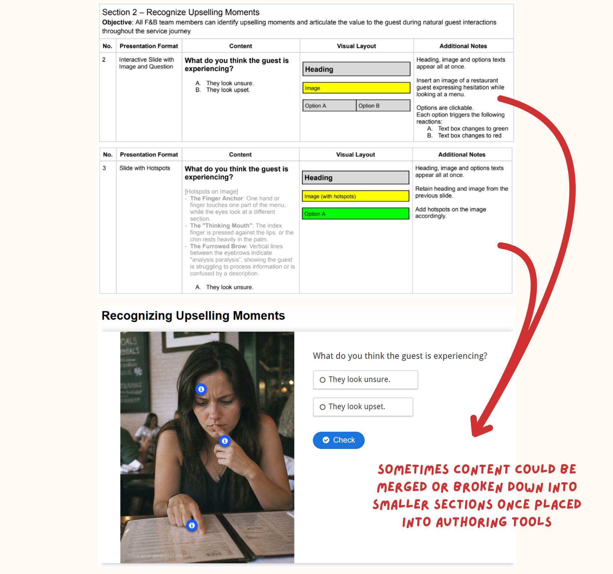
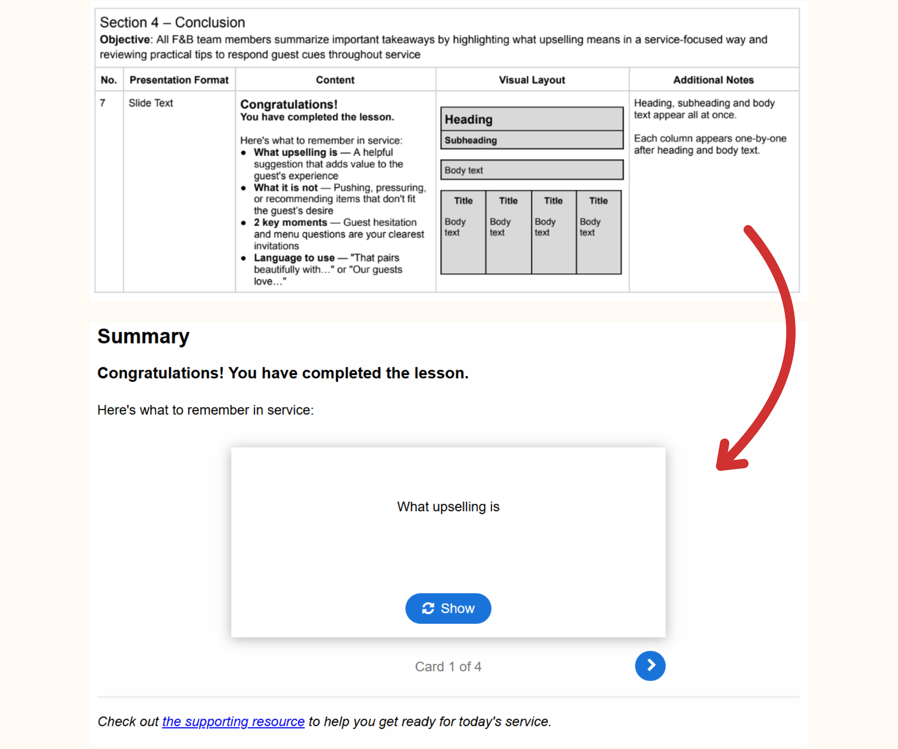

Instructional design on paper and in practice are two different problems.
Every lesson I design begins with an outline document that most people will never see. This document outlines lesson plans, the interactions that support the learning goals, and the skills learners need before progressing.
For instance, I recently transformed a lesson outline into an interactive demo using H5P. This lesson is a 2–3 minute interactive session on upselling for F&B professionals.

The build mostly went as planned... but a few limitations of H5P required adjustments.
Here are three key takeaways I learned throughout the process:
For Section 1, I initially planned a flashcard interaction with three cards visible on screen, revealing images on click. However, H5P's flashcard activity is designed for front-back flipping, not simultaneous display. Therefore, I adapted it in Course Presentation and added available features to achieve similar goals. Understanding a tool's native behavior before drafting the specifications would have saved time.

The original outline for Section 2 and 3 had the image question on one slide and the hotspot activity on the next. Since H5P slides are independent, this continuity did not transfer smoothly. By merging both into one slide, with hotspots as hints leading to the question, I created a more cohesive learn-then-apply moment. This limitation resulted in a stronger design.

The conclusion slide was intended as a static summary with sequential text reveals, but H5P does not support stepped content reveals within a single slide. So, I replaced it with Dialog Cards, which require learners to actively recall each takeaway before revealing the answer. Eventually I like this approach better since it offers a more engaging activity than the original.

Throughout the process, I used AI to help draft lesson outlines, generate images when necessary, and refine language for ESL audience.
It moved things faster.
But, one principle that applies beyond tools:
Before AI can accelerate execution, the instructional thinking still has to come first.